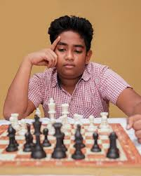
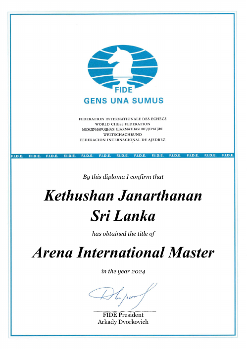
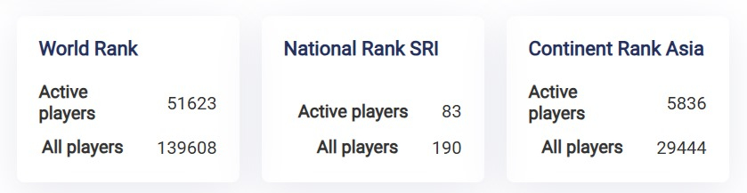

Janarthanan Kethushan

29974755

Kethushan Janarthanan is a Sri Lankan Arena International Master chess player.Based in Jaffna,
he is also a student at Jaffna Hindu College and has received an Arena International Master title from the FIDE Online Arena.
FIDE profile: According to his FIDE profile, he holds rankings in both active and all-time players for Sri Lanka, Asia, and the world.
He is also a listed participant on the FIDE Online Arena website.
He has been noted as a player for Jaffna Hindu College.
